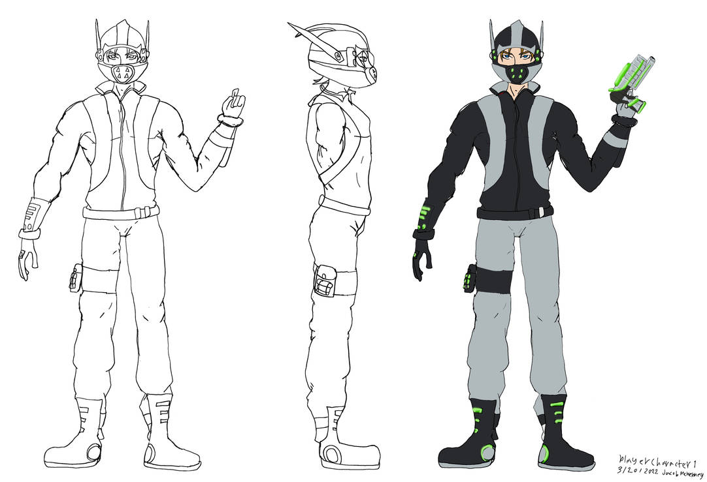

Cloud-9 Concept Art Character (Male)
Jacob McKenney, Artist/Designer, Senior
This concept art was made for a group game project called Cloud-9. This was made as a design concept for the main character of the game. As an aspiring Game Designer and Artist, it was a lot of fun and a big learning experience to be able to focus on my fields of interest in this project.
Bug Fanart
Lauren Strauss
I just like to doodle stuff. My friend wanted me to play a game over the semester. 30 hours later, i doodled this NPC. I’d like to possibly have doodling involved in my future career. I have a ways to go. But I am happy with this result.
Mycelium Witch
Salem Radey, Artist, Senior
“Mycelium Witch” was my capstone portfolio project. I spent about 3 months concepting and working through every step of a concept art pipeline before I got to this rendered splash art. I want to eventually be a concept artist or art generalist for a game company, so familiarizing myself with the process helped immensely.
Magma Lady
Salem Radey, Artist, Senior
This was work for a card art illustration for a collection card game that didn’t make the final cut. I love making original character illustrations which lends to my goals of either working as an independent illustrator or as a concept artist / art generalist on a game development team!
Mongrel Valley
Noah Santini, Creator, Junior
This is concept art for a show I have been in the works in. Designed the characters, developed an art style, wrote the story, I even started to learn how to draw for this project. The ultimate goal is to pitch this idea to a studio and have it turn into a full-fledged show!